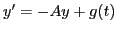
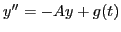
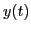
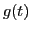

We propose a time-exact Krylov-subspace method for solving linear ODE (ordinary differential equation) systems of the form

and
, where
is the unknown function. The method consists of two stages. The first stage is an accurate piecewise polynomial approximation of the source term
, constructed with the help of the truncated SVD (singular value decomposition). The second stage is a special residual-based block Krylov subspace method.The accuracy of the method is only restricted by the accuracy of the piecewise polynomial approximation and by the error of the block Krylov process. Since both errors can, in principle, be made arbitrarily small, this yields, at some costs, a time-exact method. Numerical experiments are presented to demonstrate efficiency of the new method, as compared to an exponential time integrator with Krylov subspace matrix function evaluations.
This talk is based on the following report: http://eprints.eemcs.utwente.nl/21277/.